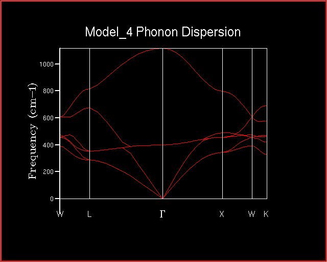
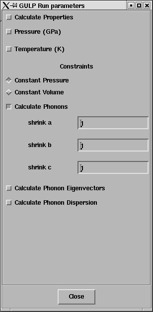
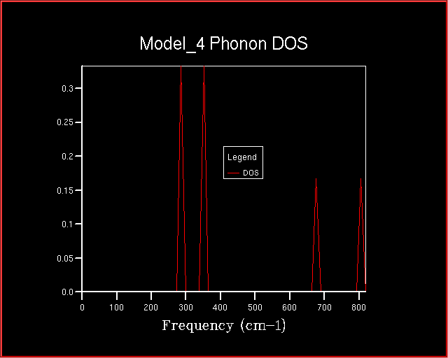

In this exercise the vibrational modes (phonon modes) of MgO will be computed. The phonon modes will be displayed as dispersion curves, a density of states and animated.
In a later exercise the free energy will be computed within the harmonic approximation. For this an accurate phonon density of states must be computed.
In order to visualise the phonon modes and understand the variation
of frequencies with k compute the phonon frequencies along a
path in k-space. These are the wj,k curves
that will also be discussed in a Lecture -
Vibrations in crystals
The essential point is that every possible vibration of the crystal can be labelled with a k-vector which is related to the direction and wavelength of the vibration.
The calculation is performed as follows;
Load the MgO structure and bring up the Execute GULP panel.
Click on General opts and select Phonon Dispersion.
Set Npoints to 50
Ensure that Calculate Phonon Eigenvectors is selected.
The special points along the conventional path in k-space, W-L-G-W-X-K, are displayed at the bottom of the panel. The phonons will be computed at 50 points along this path. Note that the path and the names for the particular end points are simply a widely used convention which allows researchers to display phonon frequencies easily - it is difficult to display the variation of the frequency over the full 3D k-space.
Run GULP and Recover Files
A window containing the Log File will pop up.
In addition a window 1D Data Display will pop up.
The phonon dispersion curves should be available for plotting.
Select GULP phonon dispersion in the 1D Data Display panel.
Click on the Draw 1D data button
The 2DView window will pop up and should contain the
phonon dispersion curves looking something like this.

At this point you will have developed a keen understanding of why many researchers invest in 19 inch monitors - if you close windows that you are not currently using it will help to keep the screen tidy :-).
Display -> Animate -> Property
The Create Property Animation panel will pop up listing all of the phonon modes computed for the dispersion plot.
Select one of the phonon modes - mode 117 is a good one to start with (the mode numbers are in brackets after the frequency and k-point).
Set N frames to, say, 30 and max amplitude to 0.2 and click Apply.
The Animate Model panel should pop up. Set Cycle Options to Cycle and click Run to animate the selected phonon. DLV will automatically switch to a suitable supercell which wholly contains the phonon being animated (ie: a cell in which the vibrating atoms repeat once). Mode 117 is at the k-point (0.0, 0.0, 0.0) and so can be represented within the primitive unit cell.
In the 3DView window the atoms begin to vibrate - this is the motion associated with the mode you have selected.
Note: DLV scales (normalises) the image every time it is refreshed which may cause the animation to jump around a little - you can prevent this by turning off the Auto Normalise option on the main control panel.
Note that you can examine the phonons at all of the 50 k-points we have computed for the dispersion curve. All of the possible vibrations of the infinite lattice of Mg and O ions can be computed and visualised in this way - we simply need to compute at enough k-points.
In order to compute, for example, a free energy a sum over all of the vibrations of the lattice is required - that means a sum over all possible k-points. In the computer this must be approximated by a sum over a large but finite number of points on a grid. In practical work the question is - how many points are required to obtain an accurate answer ?
The density of states is a useful object which summarises the dispersion curves - it is an average over all k-points yielding the number of vibrational modes at each frequency (the density of modes).
A calculation is performed as follows.
Load an MgO structure and bring up the Execute GULP panel.
Click on General opts and select Phonon DOS..
The shrinking factors along the A, B and C directions will be displayed; these simply define the grid of k-points on which the average will be performed and default to a simgle point - a 1x1x1 grid.
The panel should look like this;

Click on Run GULP and after completion Recover Files
A window containing the Log File will pop up.
In addition a window 1D Data Display will pop up.
The phonon density of states should be available for plotting.
Select GULP phonon Density of States in the 1D Data Display panel.
Click on the Draw 1D data button
The 2DView window will pop up and should contain a density
of states looking something like this.

This is the density of states (DOS) computed from a single k-point - not much of an average ! It consists of 4 distinct peaks.
In order to obtain a smooth curve the phonons must be sampled on a denser grid of k-points.
In order to use more k points rerun the the density of states calculation increasing the shrinking factors from 1x1x1.
Try 2x2x2, 3x3x3, 4x4x4 etc. grids and see how the density of states varies.